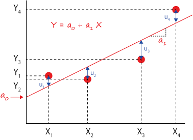

線形回帰
線形回帰はいろいろなサイトで説明がありますが，それぞれ推定したバラメータの分散・標準偏差・標準誤差，についてはあまり詳しく書かれていません．
そこで，ここのサイトを全面的に（ほぼコピー）させていただいて，自分の備忘録として残すことにしました．ありがとうございます．
目標は，
線形回帰の場合の各パラメータの誤差
ですが，ゆくゆくは，
非線形回帰の場合の各パラメータの誤差
を求めて行きたいと思っています（まだまだ先が長そうですが）．
単回帰
n個の点，\(\Large \displaystyle (X_1, Y_1), (X_2, Y_2), .......(X_n, Y_n), \)，があり，各結果には誤差が含まれています．
これを切片を持つ直線で近似する場合を考えます．近似式は，
\(\Large \displaystyle Y_i = a_0 + a_1 X_i \)
となります．ここで，a0が切片，a1が傾きとなります．

α，βの推定値を求めるのが目的なので，各パラメータの推定値を，
\(\Large \displaystyle \hat{a_0}, \hat{a_1} \)
とすると，
\(\Large \displaystyle Y_i = \hat{a_0} + \hat{a_1} X_i + \hat{u_i} \)
と記します．ここで，uiはi番目のYiと推定結果との誤差となります（なぜuにもhatがかかるかは疑問ですが．．．たぶん，各パラメータは推定値なのでそれに対する誤差も推定値，という意味かと）
ここで前提として，Xiは誤差を含まないもの，Yiは実験誤差などを含むものとして考えます．
この，\(\Large \displaystyle \hat{u_i}^2 \)が最小値をとる\(\Large \displaystyle \hat{a_0}, \hat{a_1} \)を推定すればいいので，
\(\Large \displaystyle S \left( \hat{a_0}, \hat{a_1} \right) = \sum_{i=1}^{n} \hat{u_i}^2 = \sum_{i=1}^{n} \left( Y_i - \hat{a_0} - \hat{a_1} X_i \right)^2 \)
が最小値をとる\(\Large \displaystyle \hat{a_0}, \hat{a_1} \)を求めます．これを，最小二乗法，と呼びます．
最小値を求めるには各パラメータで微分した値が０となればいいので，
\(\Large \displaystyle \frac{ \partial S \left( \hat{a_0}, \hat{a_1} \right) }{ \partial \hat{a_0} } = 0 \)
\(\Large \displaystyle \frac{ \partial S \left( \hat{a_0}, \hat{a_1} \right) }{ \partial \hat{a_1} } = 0 \)
を計算すればいいことになります．